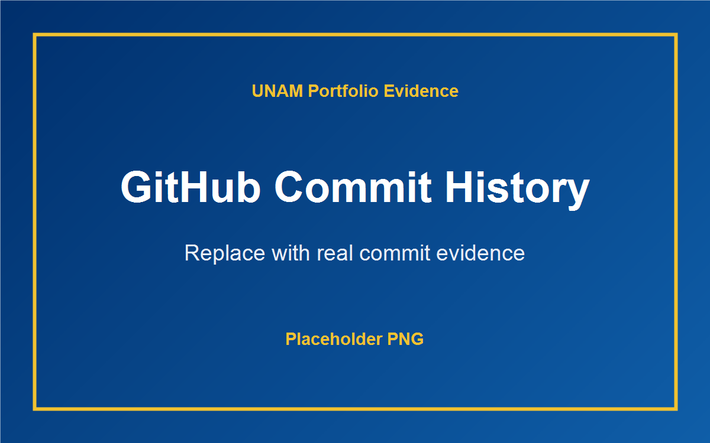
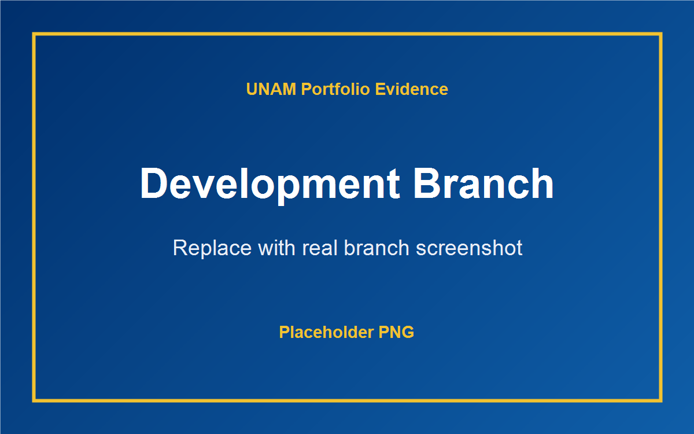
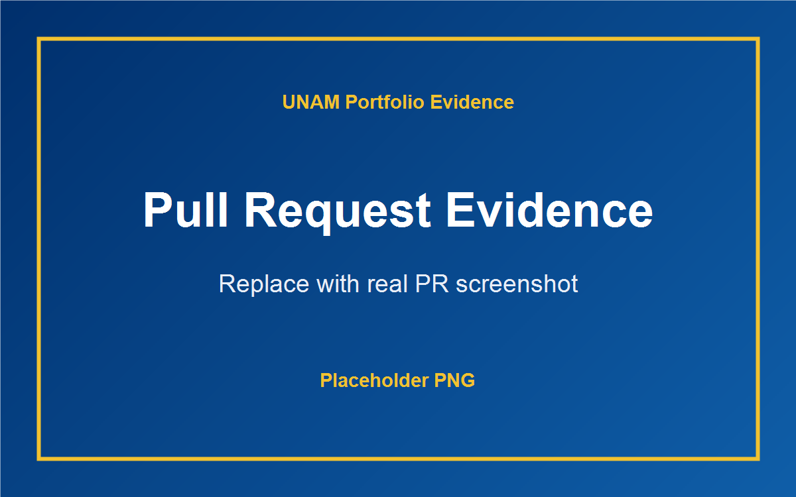
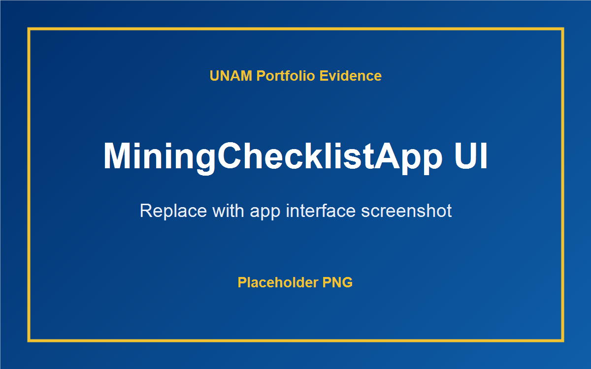
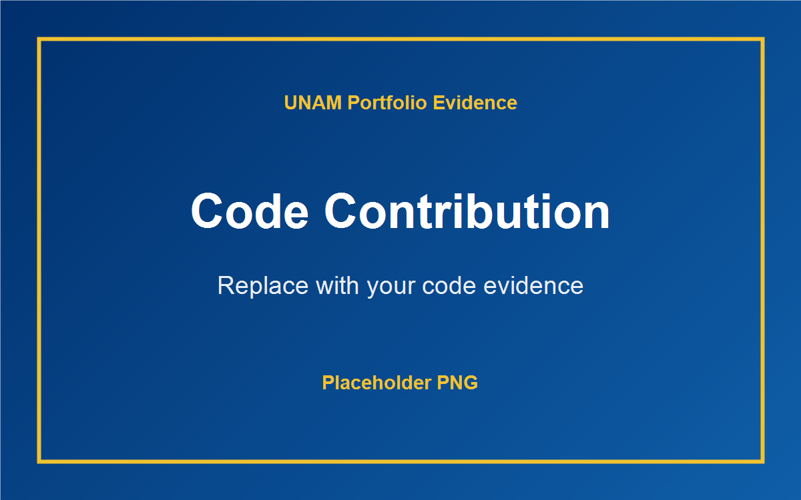

Project Overview
MiningChecklistApp is a mobile safety checklist concept for mining environments. It supports workers and supervisors by organizing pre-shift checklist submissions and improving record keeping.
University of Namibia | Computer Programming I
Computer Programming I Portfolio Showcase
A professional academic portfolio documenting my semester project contribution, programming growth, certificates, evidence, and reflection.
About Me
I am Lahya Nakashimba, a Computer Programming I student building practical programming skills through coursework, project work, documentation, and presentation preparation. This portfolio presents my work honestly and clearly, with placeholders where real GitHub evidence and final demonstration media can be added.
My academic focus this semester was learning how to turn requirements into working software, collaborate using GitHub, debug errors carefully, and explain technical decisions in a professional way.
Semester Project
MiningChecklistApp is presented as my semester project contribution area. The content below describes the project and my individual contribution without fabricating git history or evidence.
MiningChecklistApp is a mobile safety checklist concept for mining environments. It supports workers and supervisors by organizing pre-shift checklist submissions and improving record keeping.
Paper-based safety checks can be difficult to track, audit, and review quickly. A digital checklist helps teams capture information in a more consistent and accessible format.
My contribution area focuses on understanding project requirements, supporting interface planning, documenting progress, testing workflows, and preparing portfolio evidence that identifies my own work clearly.
The project strengthened my understanding of requirements, component-based interfaces, version control, debugging, and the importance of presenting evidence accurately.
I handled unclear areas by breaking the app into user roles, screens, and expected actions.
I focused on keeping checklist steps readable and easy to follow on mobile screens.
I used demonstration notes and screenshot placeholders so final evidence can be added cleanly.
Individual Contribution Reflection
During the semester, I learned that programming is not only about writing code, but also about understanding the problem, planning the user experience, testing carefully, and communicating progress. Working on MiningChecklistApp helped me see how a real application can support a practical workplace need.
My individual work is presented honestly in this portfolio. Where I do not yet have final screenshots or GitHub evidence, I have added clear placeholders that can be replaced with real proof such as commit history, branch screenshots, pull request screenshots, interface captures, and code snippets.
The biggest improvement in my learning was becoming more comfortable with debugging, reading project files, using GitHub workflow concepts, and preparing a professional explanation of my contribution.
// Add a short code snippet here that shows your own contribution.Add notes about UI planning, checklist flow decisions, or testing observations.
Contribution Evidence
These are real image files used as placeholders. Replace them with accurate screenshots when your final GitHub and project evidence is ready.





Certificates
This section is generated from the certificate manifest. Add more files to the Certificates folder and run the build script to update the cards.
Skills and Learning Outcomes
Challenges and Solutions
I turned broad instructions into specific portfolio sections, evidence areas, and project explanations.
I learned to inspect files carefully, test changes, and correct issues step by step.
I used flexible grids, consistent spacing, and mobile navigation to make the site readable on small screens.
I practiced using branches, normal commits, and honest evidence instead of fabricated contribution history.
I organized the portfolio into focused sections so each requirement can be completed and checked.
I prepared a checklist for screenshots and final presentation materials.